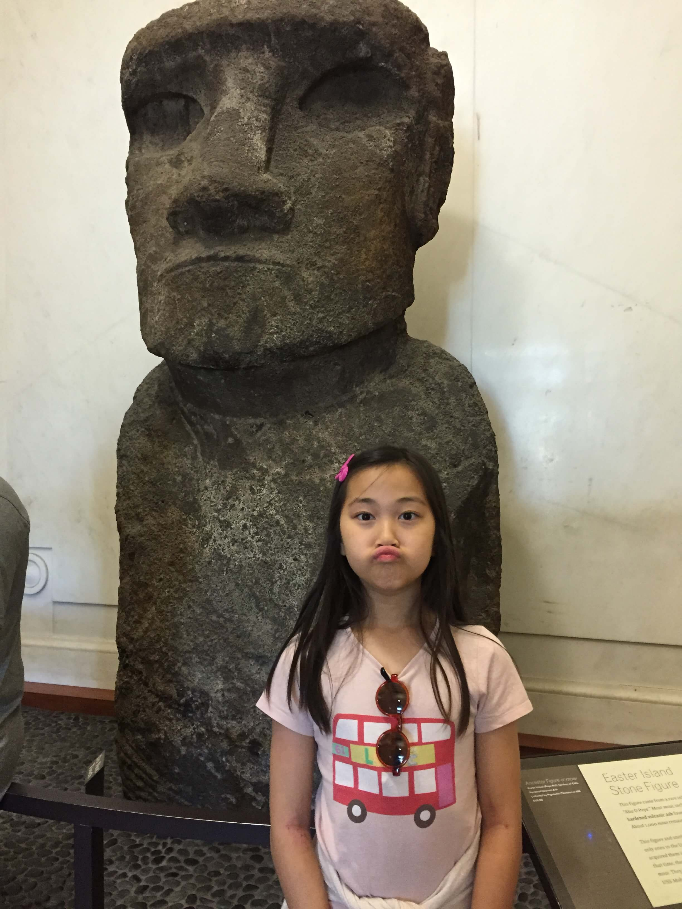
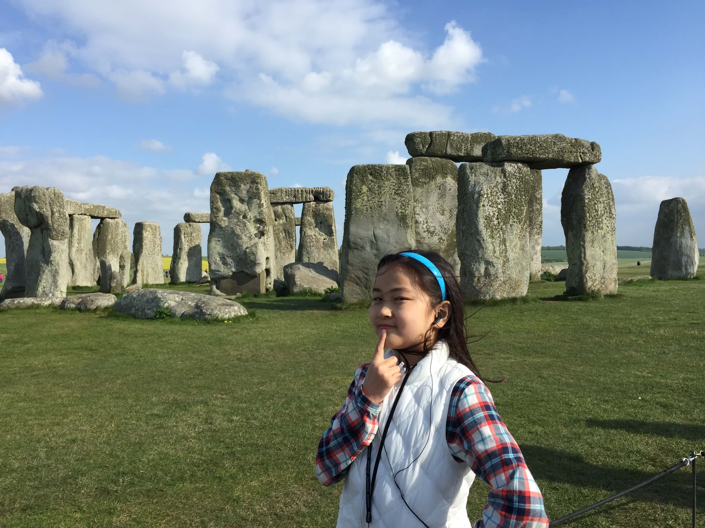
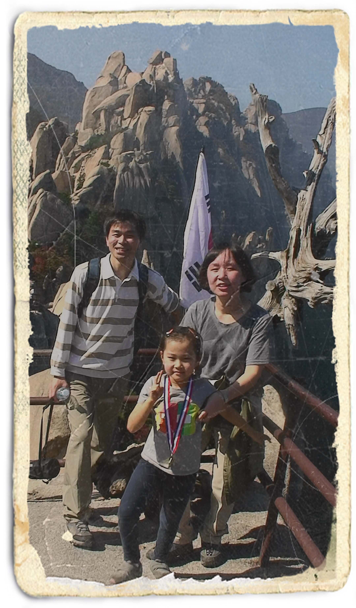
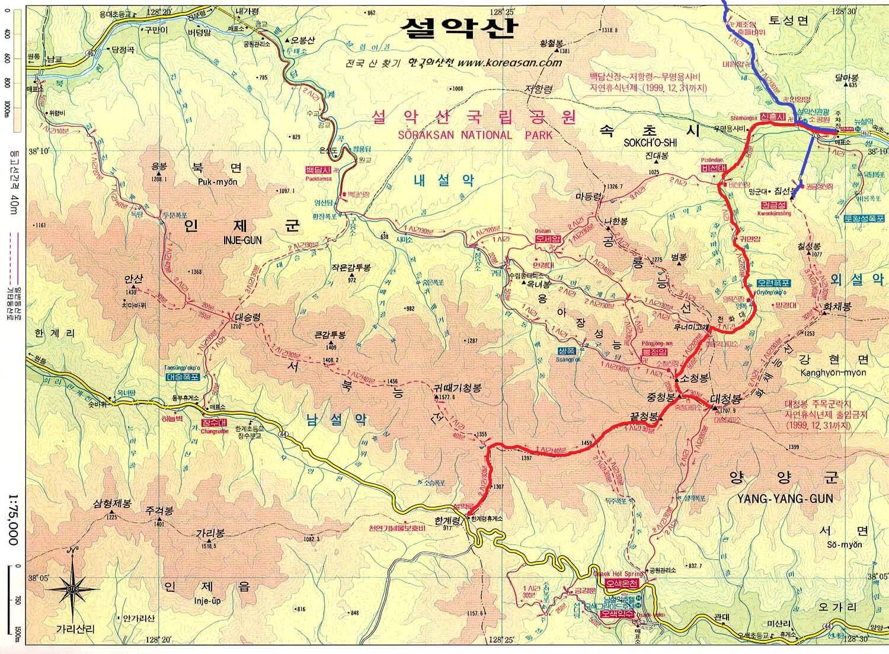

미술사
|  |  | ||
|---|---|---|---|
| 이스터섬 거석 | 스톤헨지 |
| 피라미드 | 투탕카멘 왕묘 | 스핑크스 | 에게미술 |
| 파르테논신전 | 원반(?) | 멜로스의 비너스 |
라오콘 |
| 판테온 | 콜로세움 | 수도교 | 아치/돔/ 콘크리트 |
| 카타콤 벽화 |
| 모자이크 | 하기아 소피아 |
| 생 세르냉 성당 프랑스 툴루즈 |
생 트로팽 성당 프랑스 아를 |
| 노트르담 대성당 프랑스 파리 |
샤르트르 대성당 파리 남서쪽 |
성프란체스코성당 아시시 |
| 모나리자 레오나르도 |
시스티나 성당 천장화 미켈란젤로 |
아테네 학당 라파엘로 |
피렌체 대성당 브루넬레스키 |
| 성 바울의 개종 카바라조 |
산 피에트로 대성당 베르니니 |
삼미신 루벤스 |
사냥중인 찰스 1세 판 다이크 |
| 야간순찰대 렘브란트 |
세인트 폴 대성당 런던 |
시녀들 벨라스케즈 |
베르사이유 프랑스 |
| 퐁파두르 부인의 초상 부셰 |
목욕하는 다이아나 부셰 |
14인의 성당 뷔르츠부르크 |
 |
 |  |  |
|---|---|---|---|
| 스톤헨지 작자미상 |
옷을 벗은 마야 고야 |
아담과 이브 뒤러 |
삼미신 루벤스 |